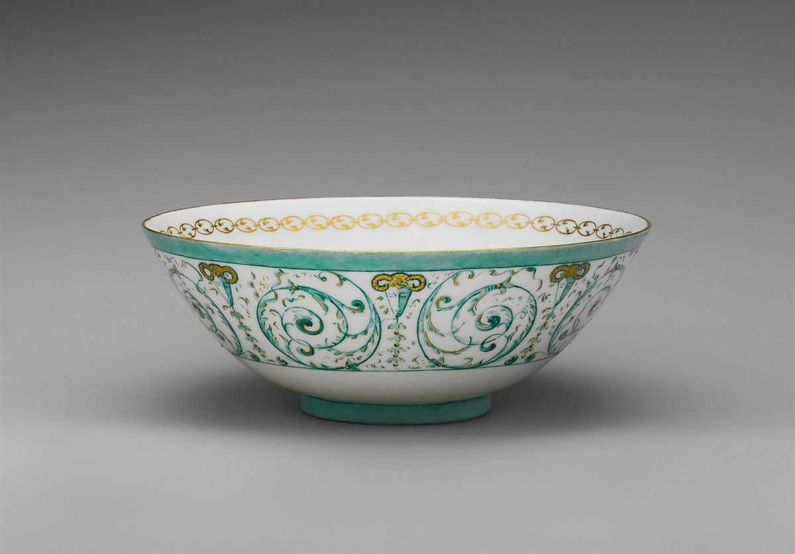

01メニューは準備中です
現在、メニューの内容は準備中です。
02ご案内
内容・価格はお問い合わせください(準備中)。お電話(0287-48-7550)またはInstagram(@hakko_shiro)からご連絡いただけます。
これは制作側が作成した試作サンプルです。実際のお店の公式サイトではありません。
掲載写真はフリー素材のイメージで、店舗の実際の様子・商品ではありません。国内外(他地域)で撮影されたものや撮影地不明のものを含みます。

現在、メニューの内容は準備中です。
内容・価格はお問い合わせください(準備中)。お電話(0287-48-7550)またはInstagram(@hakko_shiro)からご連絡いただけます。